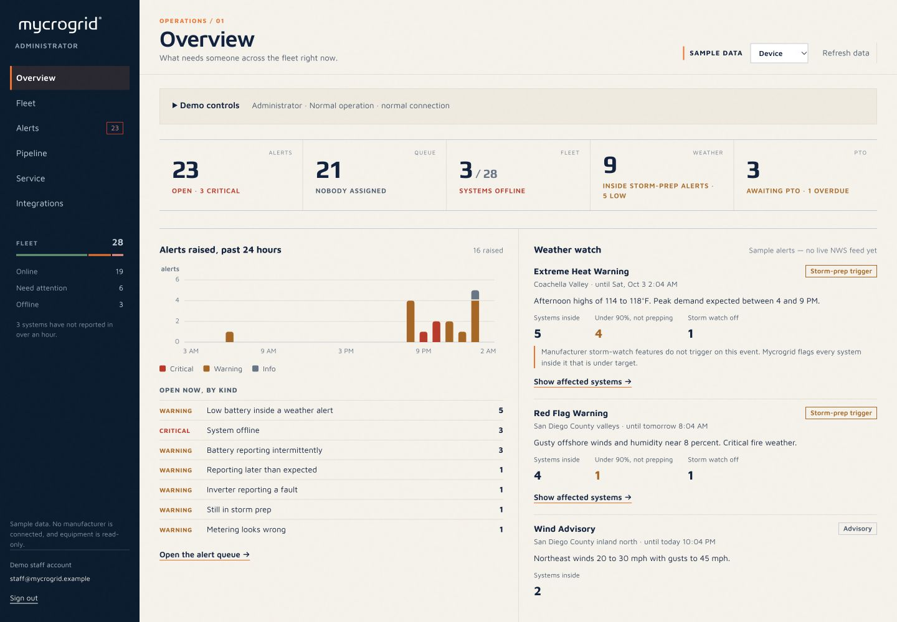
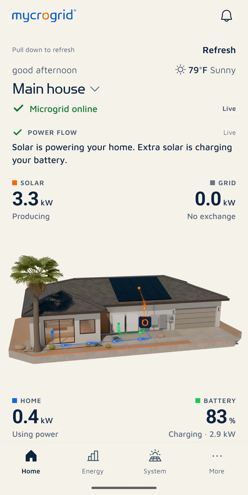
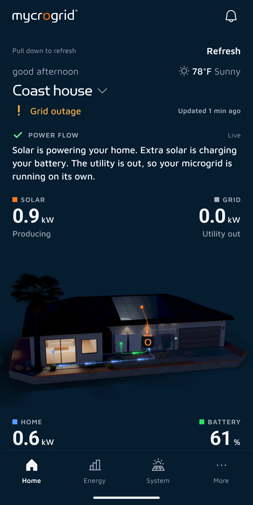
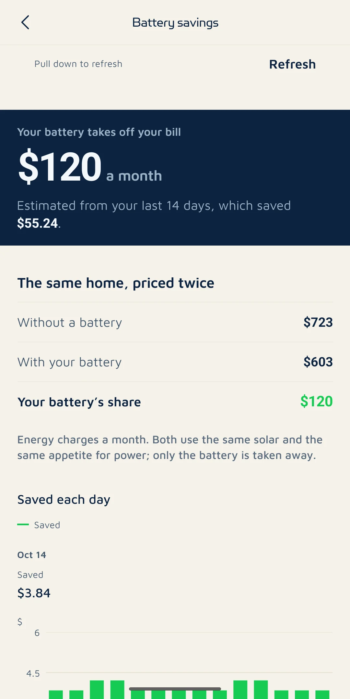
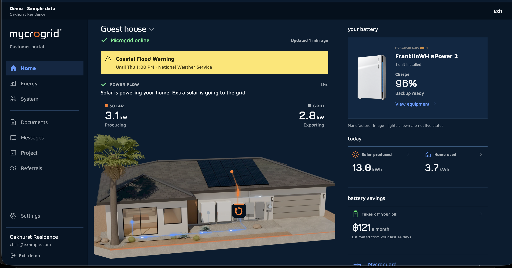
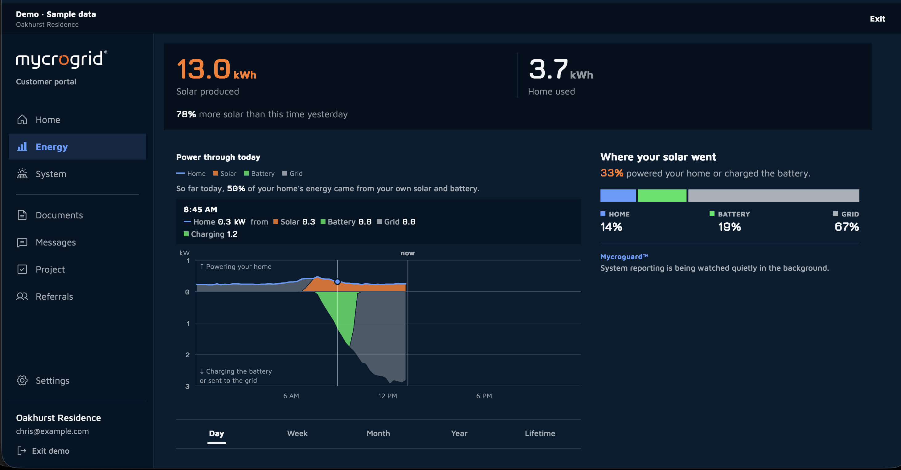
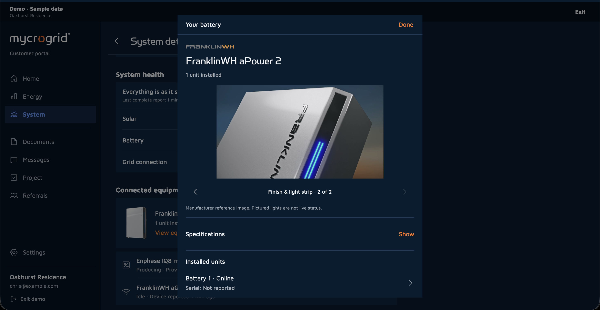
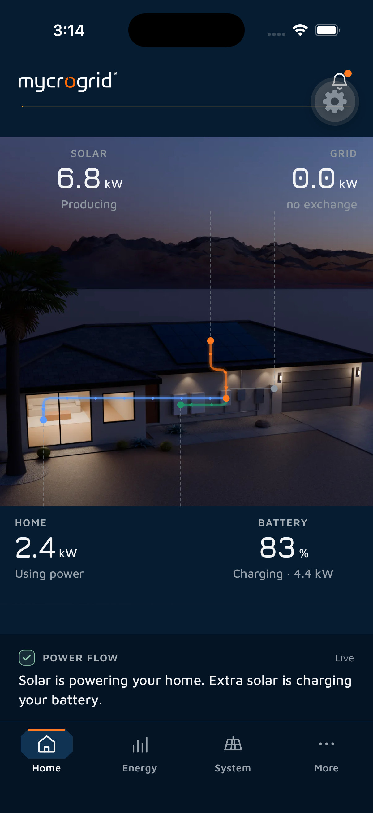
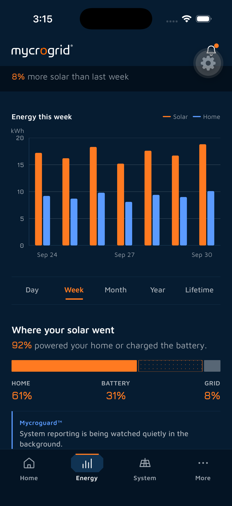
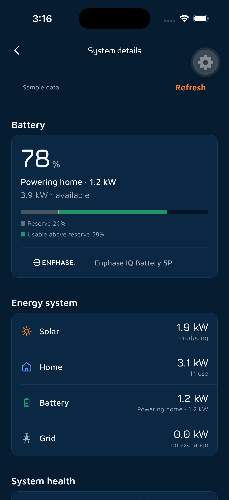

Mycrogrid Platform
One view of a home's energy system. A different view for the team responsible for the whole fleet.

The problem
A home can combine solar equipment, a battery, and a gateway from different manufacturers, each with its own portal. Homeowners need to understand what their system is doing; staff need to see which installations require attention without logging into every manufacturer's site.
The platform gives Mycrogrid its own monitoring: a homeowner app on phone and web, and an internal command center. Both use the same vocabulary for energy flows, equipment status, and reporting quality, while presenting different workflows.
Architecture
A shared TypeScript package defines the canonical data model, API contract, normalization helpers, and freshness rules. The Expo app, its web build, and the React command center all read through that contract rather than interpreting manufacturer payloads themselves.
FranklinWH is live on the read path. A Supabase Edge Function proxy holds the partner keys server-side and maps live readings, equipment, and energy history into the canonical model. PostgreSQL row-level security checks every request against the caller's own session, so homeowners read only their linked systems and staff read the fleet. Both apps sign in with passwordless email codes, and sign-up is closed to anyone who isn't a customer on file or staff.
- Canonical values. Units, separate charge/discharge and import/export flows, and missing values are handled before readings reach the interface.
- Multiple connections. Manufacturer belongs to an equipment connection, so one installation can combine providers.
- Field precedence. A stored per-installation rule decides which reading wins when two providers report the same home.
- Stored history. A scheduled daily sync writes 15-minute energy and battery health to PostgreSQL, rereads the past week to fill gaps, and rejects any day that drifts more than 5% from the manufacturer's daily total.
Shipping
The customer app is built with EAS and released to production on Google Play; the iOS build is submitted to the App Store. JavaScript fixes ship as over-the-air updates matched to each build's native fingerprint, so installed apps pick them up without a new store release.
- Continuous deployment. GitHub Actions publish the command center and the customer portal to Cloudflare Pages on every push to main.
- Staff alerts. A job checks every gateway's last measurement every 30 minutes and pushes offline alerts to phones of users who are still staff.
- Fleet on the phone. Staff get open alerts, storm watch, low-solar and battery-health lists, and site search in the app, behind the same role checks as the web.
- Store compliance. Data-safety, account-deletion, and reviewer-access declarations, with a sample-data demo home so reviewers can explore without an account.



Implemented workflows
The homeowner app covers power flow, energy history, battery savings, equipment details, documents, and multiple properties. The staff command center covers fleet views, telemetry, alert triage, and battery health.
- Home energy. Solar, home consumption, battery charge, and grid exchange share one system view.
- Battery savings. Each home's 15-minute data is priced against its utility rate twice, with and without the battery, to estimate what the battery takes off the bill.
- Fleet triage. Searchable map and list views, underproduction flags normalized against the fleet's day, and battery health tracked against warranty terms.
- Equipment. Manufacturer imagery, specifications, and installed units for each system.
Captured from the customer portal's demo home: Home shows current power flow, Energy compares daily production and consumption, and the equipment viewer shows battery imagery, specifications, and installed units.



Dark mode
The same native workflows in dark appearance, captured from the iOS simulator. Home uses the night artwork; Energy shows weekly history and solar allocation; System details shows battery reserve and energy readings. Readings are from the demo home.



Reliability decisions
A stale reading can look plausible long after a system stops reporting. Measurement age and connection health therefore set the displayed data quality (live, delayed, partial, or unavailable), with missing readings distinguished from a legitimate zero.
When a refresh fails, the interface keeps the last successful readings, their original timestamps, and a saved-data warning. The app never triggers manufacturer calls on its own: screens read from cached and stored data, which keeps provider costs and rate limits predictable.
Monitoring is read-only toward equipment. Nothing in the platform changes battery settings or sends commands to a manufacturer; remote control is a separate phase behind its own security review.
What's next
The platform is live on FranklinWH. The next work widens it and deepens it.
- Connect the remaining manufacturers (Tesla, Enphase, Lunar) through the same canonical contract.
- Turn on push notifications for homeowners.
- Release on the App Store once Apple's review completes.
- Approved remote battery control, scoped as its own phase.